← 返回阅读库 · 原论文目录
论文讲解阅读文档 · 机器人学 · v106
Efficient Transformers in RL using Actor-Learner Distillation[2104.01655]
视频时长 00:07:09；讲解文字 3,469 字符；提取讲解画面 20 张。按视频原顺序阅读，每段文字保留时间戳。
文字来自整段视频的自动语音转写，按自然停顿分段，并与 PPT / 论文页面 / 演示画面对齐。未将讲解压缩为摘要；术语、数字和口述公式请结合画面及原论文核对。 阅读稿已校正规范部分明确术语误识别；原始逐字稿和每处修改记录另行保留。
讲解画面为源视频截图（640×360），不是可编辑 PPT 文件。全片按每秒 2 帧扫描内容变化，逐步展开页保留；连续动画保留代表画面。清晰度受源视频限制。
下载完整资料包 · 含离线 HTML、PDF、Word、全部 PPT 画面和字幕。
原论文与材料
Efficient Transformers in Reinforcement Learning using Actor-Learner Distillation · 下载完整 PDF（15 页）
按时间阅读
00:00:00–00:00:35 · 画面 001
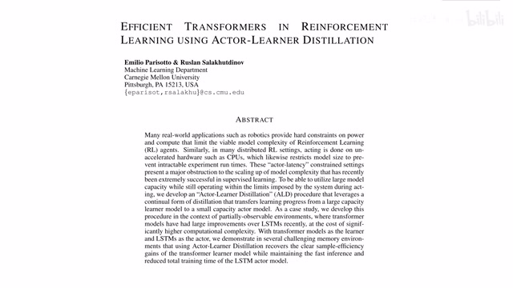
00:00:00–00:00:35 · 画面 001大家好，今天我们来介绍 Efficient Transformers in Reinforcement Learning using Actor-Learner Distillation。那么这篇论文的核心思想就是 Transformers，它虽然能够给我们带来很好的性能，但是它跑起来实在是太慢了。我们想办法把这个大的 Transformer 给它蒸馏到一个小的简单的一个 LSTM 里面，就可以获得一个很高效的 agent。
那么当然我觉得这个题目 Efficient Transformer 是有误导性的，因为毕竟你没有提高 Transformer 的效率，而真正 Efficient LSTM 它又不是 Transformer 好的。那么在这个视频中，我们还是首先介绍一下之前我们研究遇到的困境，说白了也就是 Transformer 太慢了的这个问题。那么随后是本文提出的 Actor-Learner Distillation，就是通过蒸馏的方法把一个大的模型压到一个小的模型里面，最后是作者汇报的一些结果。
00:00:35–00:00:53 · 画面 002
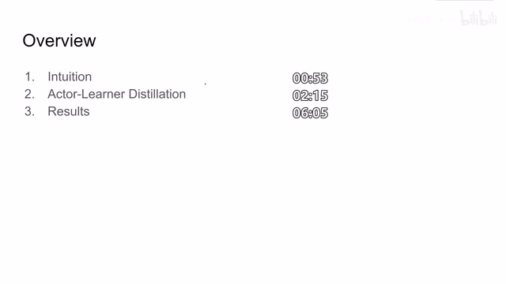
00:00:35–00:00:53 · 画面 00200:00:53–00:00:54 · 画面 003
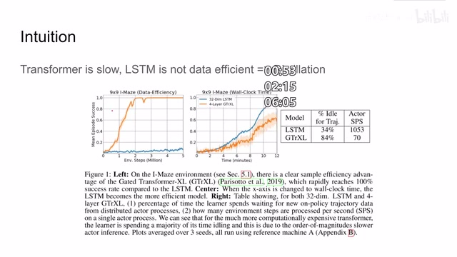
00:00:53–00:00:54 · 画面 003那么首先来看 Transformer，因为我们没有对它做硬件上的优化，所以说它的性能是很低的。而 LSTM 很多时候它的性能也没有那么好。可以看到左边这个图显示的是 Data Efficiency，蓝色是 LSTM，橙色是 Transformer。可以看到在和环境交互相同的 steps 的时候，Transformer 它的成功率是远高于 LSTM。
00:00:54–00:01:29 · 画面 004
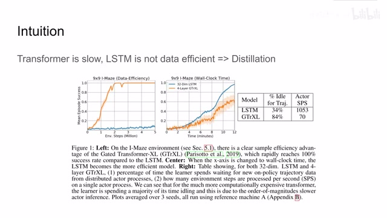
00:00:54–00:01:29 · 画面 004但是呢，假如说我们如果放到实际的这个真实世界中的时间来看，我们发现这个 LSTM 呢觉得比 Transformer 还快，原因在于什么呢？原因在于 Transformer 有很大的时间呢都是我们的 environment 在等待我们的 Transformer 去给它做一个推理，也就是 Transformer 的推理时间呢实在是太慢了。可以看到在一秒里面这个 LSTM 呢可以走 1000 多步，而这个 Transformer 呢只走了 70 多步，这个对比呢就很明显。那么为了结合两个模型的优点，作者提出呢。
00:01:29–00:01:30 · 画面 005
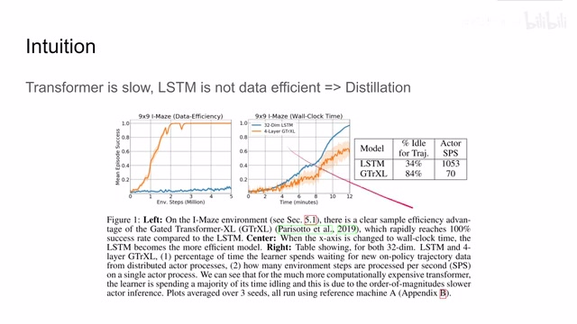
00:01:29–00:01:30 · 画面 00500:01:30–00:02:15 · 画面 006
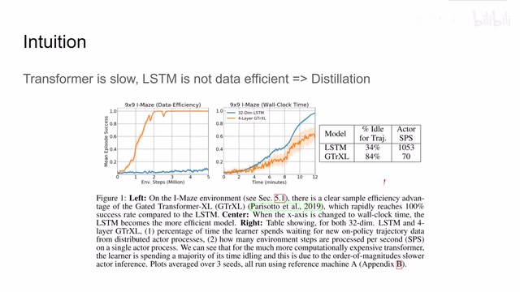
00:01:30–00:02:15 · 画面 006就是使用数据蒸馏的方法，我在训练的时候呢维持一个大的 learner，这个 learner 是比如说是一个 transformer，他很强。在执行的时候呢，我是使用 LSTM 来执行，也就是说我把这个大的 learner 的知识给他蒸馏到这个小的 actor 里面。这样子呢就既兼顾了 data efficiency，又能够保证我们的 actor 真正执行的时候呢，他足够快。那么具体来看本文提出的 distillation 他的数据流。
00:02:15–00:02:19 · 画面 007
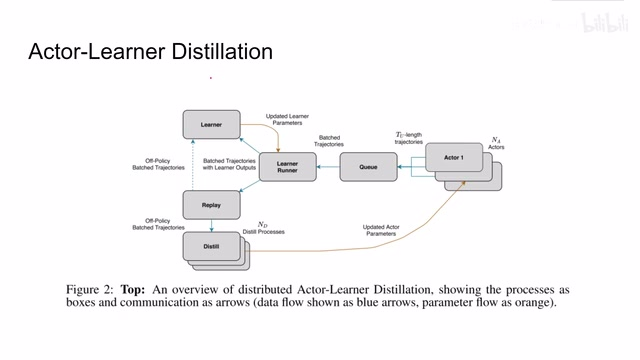
00:02:15–00:02:19 · 画面 007首先呢，我们假设我们现在有很多个 actor，他们是 parallel 的，也就是在并行的在不同的各自的环境中他们进行着自己的数据收集。那么收集的样本呢放到队列里面扔给我们的 learner，同时呢衍生到我们的 replay buffer 里面。那么这个 learner 在学习的时候呢同时从我们的新加的样本中达到了数据，同时呢再从我们的 replay buffer 中采样。那么这样子呢我们用一些一般的 reinforcement learning 的方法。
00:02:19–00:02:21 · 画面 008
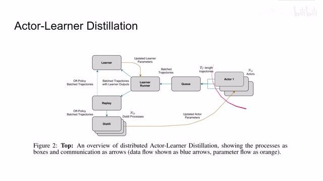
00:02:19–00:02:21 · 画面 00800:02:21–00:03:34 · 画面 009
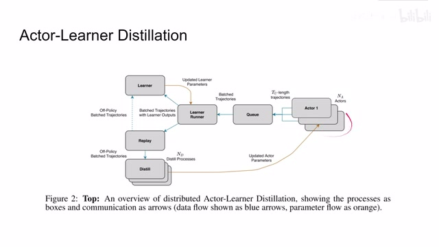
00:02:21–00:03:34 · 画面 009就可以训练我们的 learner。那在我们训练一个 learner 的同时呢，我们还要训练一个 actor，把我们的 learner 的知识呢蒸馏到 actor 里面。这个时候呢就是我们从 replay buffer 中采集出样本来使用我们 learner 的推断来去蒸馏去训练我们的 actor 这个 network。这个 actor 呢得到更新之后呢再回到我们的这个环境里面用新的 policy 再去收集数据。
那么这个就是一个典型的非同步的 reinforcement learning 的方法，但是呢，它多了一个蒸馏的这一步。那么对于这个 learner 呢，我们之前说了，它是适用于任何 generalize 的这个 reinforcement learning 的方法，你平常怎么做 RL，你现在就怎么继续做就可以了。而对于蒸馏这一步呢，我们来看一下我们使用哪些 loss。那么首先呢，是 policy distillation loss，也就是说，我希望我的 learner 的这个 policy 它输出的 distribution 和我们的 actor
00:03:34–00:03:55 · 画面 010
00:03:34–00:03:55 · 画面 010的 policy 他输出的 distribution 这两个 distribution 呢是相互靠拢的。那么如何衡量两个 distribution 他们的距离呢，我们熟悉的 kl divergence，那带进去就可以了。注意这里呢，作者说我们虽然是把我们的 actor network 去推向这个 learner 这个 network，但是呢，我们是同时训练这两个 network，也就是说在一定程度上呢，它是相当于把 actor 和 learner 向中间来做平滑。这是我们 loss function 中的第一个部分
00:03:55–00:03:56 · 画面 011
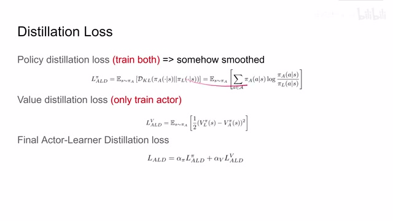
00:03:55–00:03:56 · 画面 01100:03:56–00:04:11 · 画面 012
00:03:56–00:04:11 · 画面 01200:04:11–00:04:12 · 画面 013
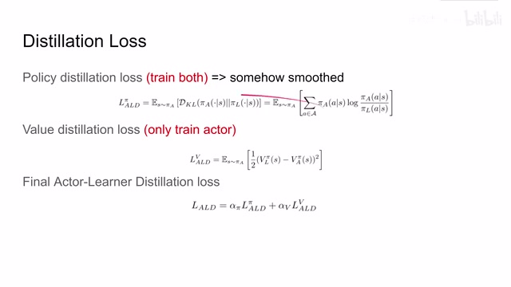
00:04:11–00:04:12 · 画面 01300:04:12–00:04:33 · 画面 014
00:04:12–00:04:33 · 画面 014那么第二个部分呢，就是 value distillation，那这个就非常简单了，就是很直接的，我的 learner 输出了什么样的值，那么我的 actor 呢也就应该跟上输出什么样的值，这个一个最简单的 mse 吧。而对于这个 loss 呢，我们是只训练 actor。那么最后呢，把这两个 loss 给它组装起来，有两个 hyperparameter，这就是我们最终使用的这个 loss。那么最后呢，我们来快速过一下本文的一些技术细节
00:04:33–00:04:35 · 画面 015
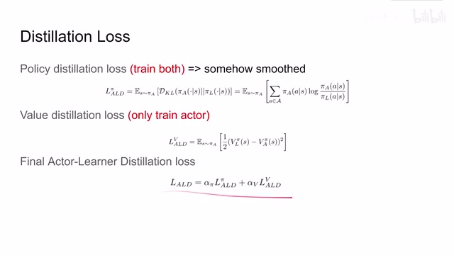
00:04:33–00:04:35 · 画面 01500:04:35–00:04:37 · 画面 016
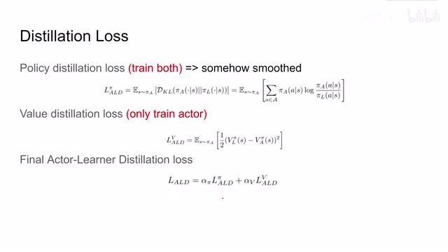
00:04:35–00:04:37 · 画面 01600:04:37–00:05:32 · 画面 017
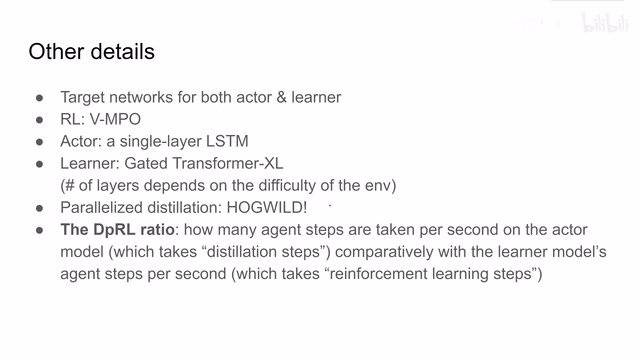
00:04:37–00:05:32 · 画面 017那么首先，为了训练稳定呢，肯定是维护了针对 actor 还有 learner 他们的 target network。这里呢，作者使用的 reinforcement learning 呢是 vmpo，我们后面马上出一个视频来介绍它。actor 呢是一层 lstm，而这个 learner 呢是 Gated Transformer-XL，这个后面呢我们也是马上出一个视频来介绍它啊。这个 transformer 的这个层数呢和我们的环境的难度是有关的。那么同时呢，为了进一步加速这个蒸馏的部分
这里作者使用了 HOGWILD!这是一种并发的随机梯度下降，直接无视了同步的锁，非常暴力，结果效果还不错。那么这里作者定义了一个 DpRL ratio，这个 ratio 全名叫做 distillation stepsper reinforcement learning steps，也就是说我进行了简单来说就是我训练一步我的 reinforcement learning agent，我需要做多少次蒸馏。那么从实验的结果来看，在这个环境下
00:05:32–00:06:06 · 画面 018
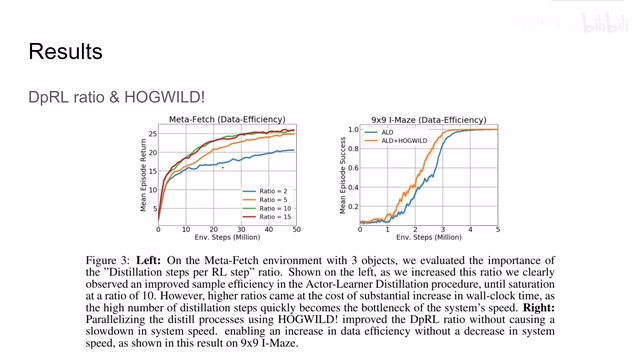
00:05:32–00:06:06 · 画面 018就是说我训练一步 reinforcement learning 做 10 次蒸馏能够达到最好的效果，随着我蒸馏的次数在继续增加，它只是增加我的计算量，并不能给我们带来更好的性能了。同时使用 HOGWILD!居然能够一定程度的提升我们的 data efficiency，同时使用它也保证我们在使用大的 distillation ratio 的时候能够让我们整个系统的训练速度跟上，不至于说最后的 distillation 成了计算的瓶颈好的，那么最后来看作者汇报一些结果吧，这个是非常简单的环境 Maze 就是一个 I 型的迷宫。那么相对于原生的 Transformer 来说呢，本文方法的 Data Efficiency 呢是略逊一筹的，因为毕竟在本文中你的 Transformer 训练出的结果之后是要先蒸馏到 Actor Network 里面然后再去做环境交互再去收集数据的，所以呢，这个是可以理解的。但是呢，在速度上来讲，本文的方法呢是 Outperform 其他的 baseline
00:06:06–00:07:09 · 画面 019
00:06:06–00:07:09 · 画面 019那么作者还测试了另一个环境叫做 Meta-Fetch,那么基本上也是 outperform 其他方法。好的,那么总的来看本文提出的使用知识蒸馏的方法,把一个 Transformer 蒸到一层 LSTM 里面,那获得了不错的 Data Efficiency,还有它的实际的运行速度,在工程上的意义比较显著,但是这里作者只汇报了这两个环境,我们还是希望能够看到在更多环境下面,这个本文提出的方法它的表现。
如果你对本文实验设计的细节感兴趣呢，还是非常推荐你去查看原文。好的，那么以上就是我对这篇论文的简单的分析，那么感谢您的收看，再见
00:07:09–00:07:09 · 画面 020
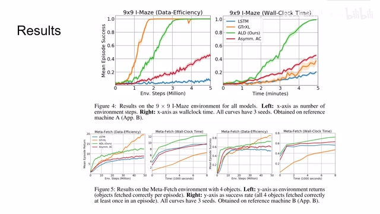
00:07:09–00:07:09 · 画面 020转写与来源说明 · 0 个自动复核提示
保留 16 个原始语音片段，0 个片段触发自动复核提示。提示仅用于定位可能的术语、重复或识别问题，不等于已确认错误。
讲解画面为源视频截图（640×360），不是可编辑 PPT 文件。全片按每秒 2 帧扫描内容变化，逐步展开页保留；连续动画保留代表画面。清晰度受源视频限制。
原视频：paper/合集_2026-10-16_机器人学/[论文简析]Efficient Transformers in RL using Actor-Learner Distillation[2104.01655].mp4
SHA-256：76d0c366542e43a0da3f70ae45130c029ffcb614b974c41fe41ec75c07a4d1db
全文按视频语音与画面制作。原论文可从上方链接下载；完整资料包保留全文、原始逐字稿、字幕和校对记录。